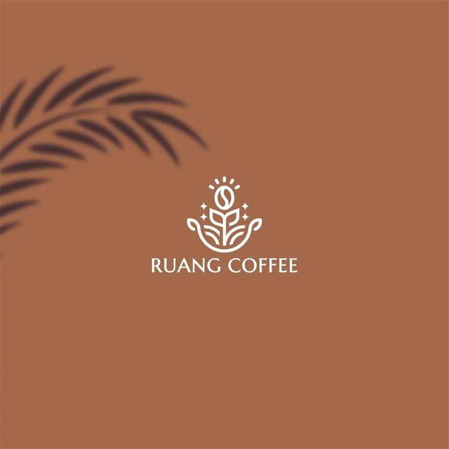
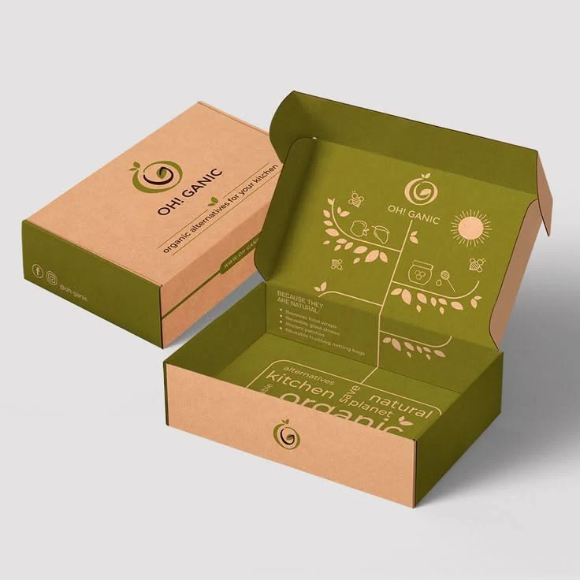
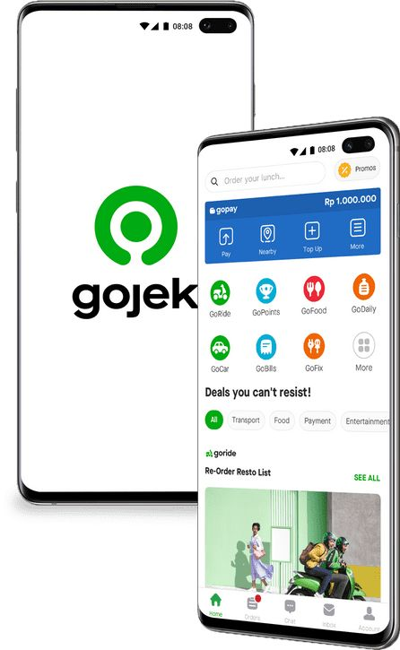
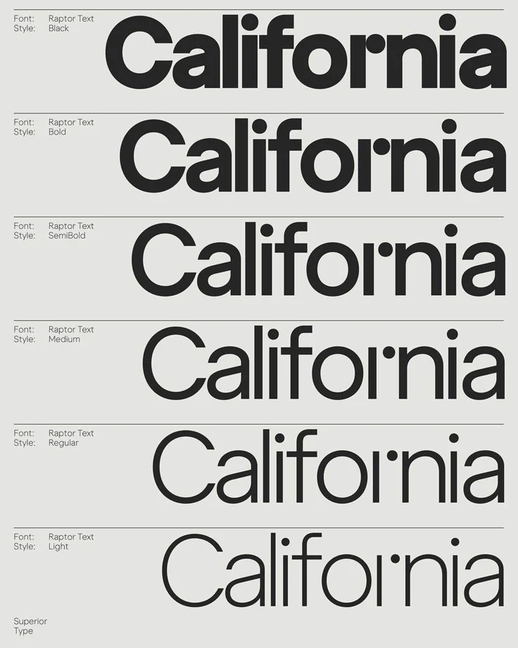

Featured Portfolio
- All
- Photography
- Branding
- UI/UX
- Typography

Urban Light Series
Photography

Monochrome Portrait Story
Photography


Nusantara Coffee Brand Identity
Branding


Eco Packaging Visual Concept
Branding


Gojek Super App Interface
UI/UX


Aksara Modern Typeface
Typography